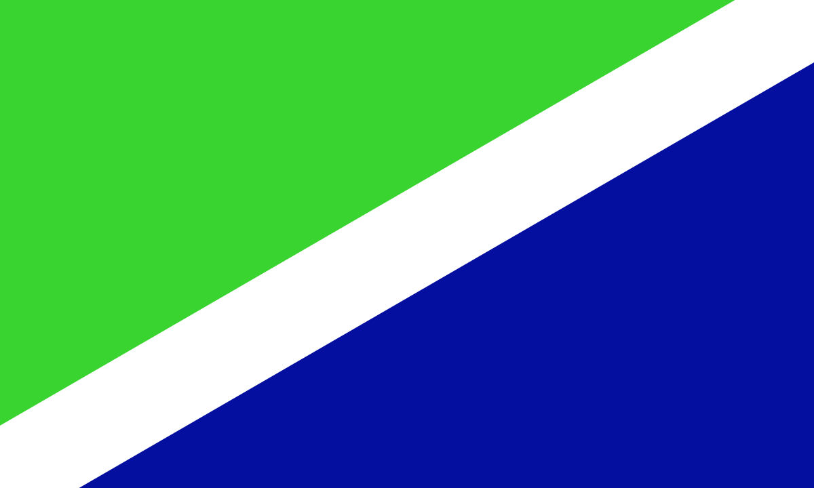
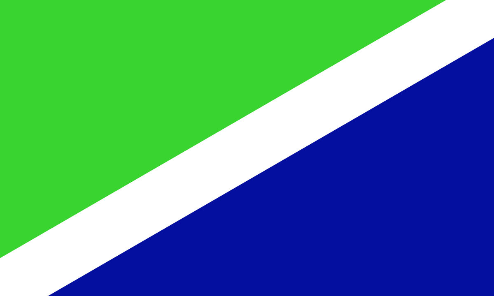

Rodrigo Chaves

Partido al que pertenece el candidato
Progreso Social Democrático

Progreso Social Democrático
Lo que hacemos hoy nos define, como individuos y como país. Las voces de la Costa Rica del mañana nos preguntarán qué hicimos en nuestra época, con cuánta urgencia, pasión y entrega asumimos el mandato de un pueblo ansioso de respuestas, ansioso de un porvenir que le pertenece y que se merece.
Los costarricenses eligieron este domingo en segunda ronda al economista Rodrigo Chaves Robles como el presidente 49 en la historia del país, tras una campaña en la que el político centró su mensaje en promesas de "cambio" y de una lucha frontal contra la corrupción (RTVE).
Tras terminadas las elecciones presidenciales y el triunfo del presidente Rodrigo Chaves este mismo da un discurso de agradecimiento y alentamiento para el pueblo costarricense.